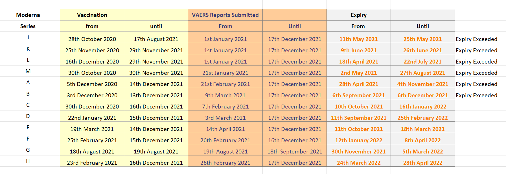

Lot Expiry Dates
home | Booster Warnings by Month | Moderna | Pfizer | Janssen | Moderna (outside USA) | Pfizer (outside USA) | Janssen (outside USA) | Severe | Symptom | Treatment | Children | Clusters | All or Nothing | Time till onset | Gender | Geography | States | Causality | Japan | Sweden | Video Library | Case Reports | Lot Sizes | Lot Expiry Dates | Whistle Blowers | Data Cleaning | Background | Download Source Code | Donate
If this site is slow loading that's because over 1 million people are accessing it right now. Please use auxillary site HowBadisMyBatch.com which has been set up to cope with this overload. Thankyou.
The Significance of Lot Expiry Dates
So we have a list of the expiry dates for all the vaccine lots. So what! Well, heres why this list is important..
The govt makes available to medical practitioners a list of expiry dates for all lots. However the CDC keeps this list a guarded secret from the general public (why would that be, I wonder?). However, a contact passed on this list to me. I noticed that the lots on the expiry list are ALL of the ones with the highest number of adverse reactions reports (ADRs) in each alphabet group. I wondered why that was so? Why were none of the other lots on the expiry list - those with only a handful of adrs? (I had previously surmised that the others could be placebo.)
Then it occurred to me that only the biologically active lots will be on the expiry list, because a degradation of the biologically active ingredients would pose a greater danger than the degradation of a placebo. That’s possibly why the cdc did not want the public to get hold of this list. They only release it to medical professionals - for "security" reasons - because it reveals which are placebos, and which are biologically active -
if a batch is not on the list then it is a placebo !
So now we have a list of all the biologically active lots. This is obviously good information for people trying to avoid toxic batches. Simply check your batch against the expiry list. If it is not there, then the probability is that it is a placebo.
Note : Please remember that they introduce new batches that may not be on the existing list, and also that even amongst the biologically active lots there is still considerable variation of toxicity - one bad lot may not be the same toxicity as another.
Note : This expiry list may only apply to USA batches. It may not apply to European batches - which often have different batch codes
Testing out this idea
IF lots with an expiry date are lots that are biologically active,
THEN lots with an expiry date should be associated with far more adverse reactions than lots without an expiry date.....This is, in fact the case. See - CDC Expiry List and Biologically Active Lots
Moderna Lot Expiry Dates
Pfizer, Moderna and Janssen Lot Expiry Dates
The source for the above "Biologically Active" list is
An additional source is here -
Using Expiry List to Determine if Your Batch is Safe
Expiry dates are issued only on biologically active lots - and it will be listed on the above spreadsheet named -"Expiry dates for 439 Biologically Active Lots......"
This is a "rule-of-thumb" way you can check to see if your lot did any damage, or if it was just a placebo. Having a definitive list of biologically active lots, also enables us to provide a more accurate figure of what percentage of the lots are dangerous.
Using Expiry List to Determine Which Batches are Not Typos
The CDC issued a list of 439 batch codes with the corresponding expiry dates, so we know at a minimum that these 439 batches/lots are real batch codes for real batches - rather than erroneous inputs by vaccine recipients.
Now, when we look at VAERS to see how many adverse reactions, deaths and disabilities are associated with each of these 439 batch codes, we find the same massive variation as before - adverse reactions varying 1000 fold between the batches.
Do Vaccinators Disregard Expiry Dates for Biologically Active Lots ?
As you can see in the table below, vaccinators carried on vaccinating with Moderna batches from series J, K, L, M, A , B beyond the date of expiry

If a vaccinator is paid £12 for each vaccine shot, then they may not have wanted to throw away expired vaccine, regardless of the effects on the health of the recipient. This should not surprise us, since they also disregard the safety signals from deaths, disabilities and illnesses following vaccinations